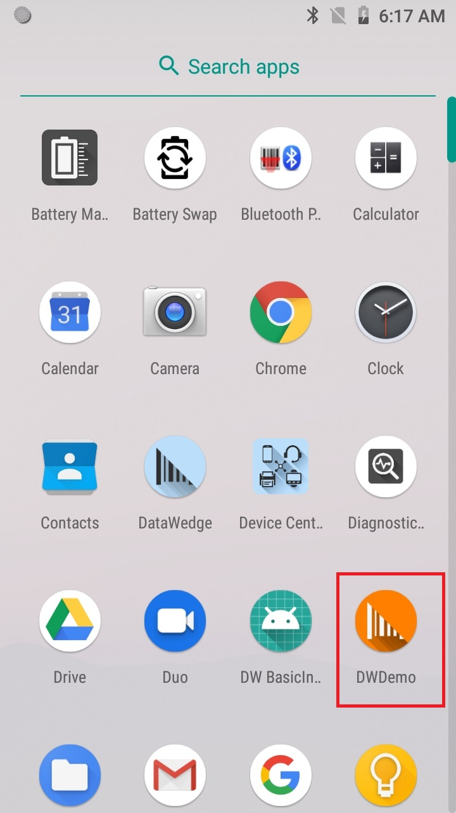
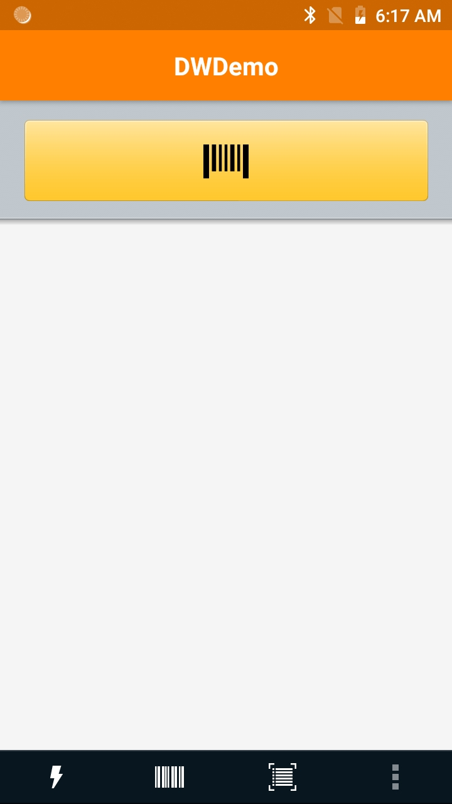
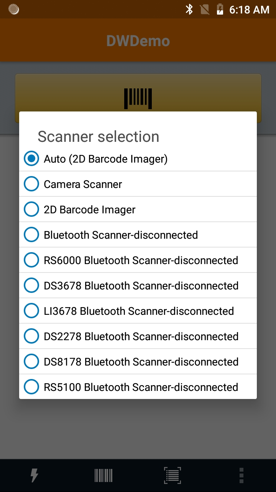
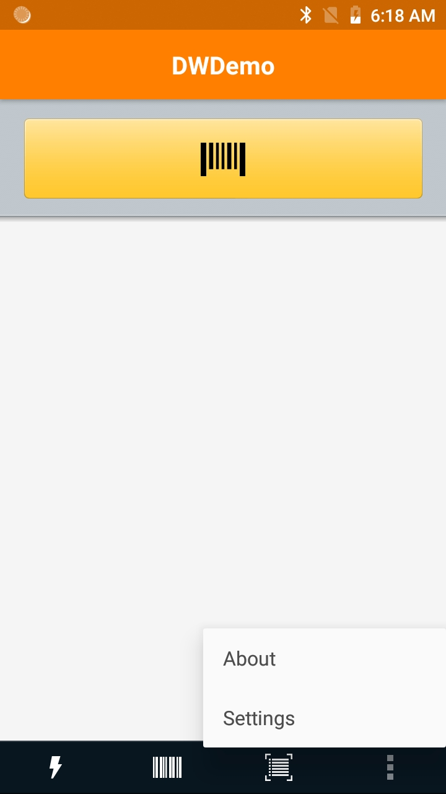
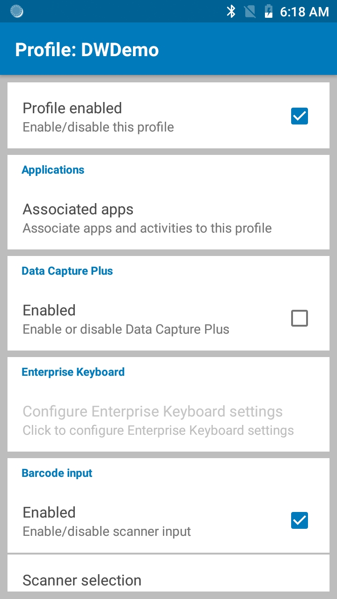
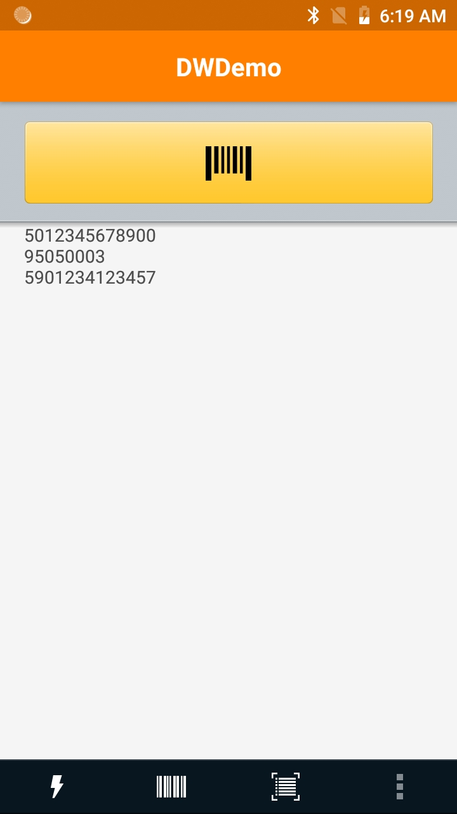

DWDemo では、バーコード スキャン機能を実現し、DataWedge Intent 出力を使用してアプリケーションでデータを取得する方法を示します。DWDemo は、すべての Zebra Android デバイスにデフォルトで提供されています。
 図 1: アプリ画面での DWDemo
注:
「DWDemo」という DataWedge プロファイルが DataWedge に事前構成されており、デモ アプリに関連付けられています。DWDemo プロファイルは、有効にする必要があります。また、テストまたはデモ目的で必要に応じて変更できます。デモ プロファイルを有効にしたら、アプリの黄色のスキャン ボタンをタップするか、デバイスのハードウェア トリガを押して、バーコード スキャンを開始します。デコードされたデータがアプリ画面に表示されます。
DWDemo アプリは、イメージャ、カメラ、Bluetooth デバイス、または磁気ストライプ リーダー (MSR) が接続されている場合、そのデバイスによるスキャンをサポートします。
このデモ アプリで使用可能なアクション:
 図 2: DWDemo メニュー
DWDemo メニュー設定 (左から右):
 図 3: DWDemo メニュー
 図 4: DWDemo オプション メニュー
DataWedge の設定と優先選択は、以下に示している DWDemo プロファイルで構成できます。
このガイドでは、DataWedge プロファイルに関する実務的知識が必要です。
DWDemo アプリでスキャンをアクティブにするには、[プロファイル有効] チェックボックスをオンにする必要があります。このチェックボックスは、関連付けられている DWDemo プロファイルに用意されています (図を参照)。必要に応じて、さらに設定を変更できます。図 5: プロファイル設定
テスト スキャンを実行するには、スキャン対象をポイントしているときに黄色のスキャン ボタンをタップするか、デバイスのスキャン トリガを押します。
取得したデータが、次の図のようにウィンドウに表示されます。図 6: DWDemo でキャプチャしたデータ
DWDemo プロファイルに変更を加えることで、関連付けられている DWDemo アプリを使用して、さまざまなデコーダ、取得したデータを処理するためのルール、およびその他の DataWedge 構成のバリエーションをテストできます。プロファイル設定変更の詳細については、「プロファイルの管理」を参照してください。
関連ガイド: